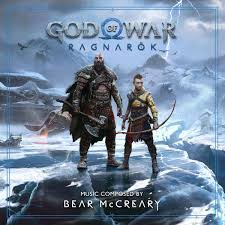
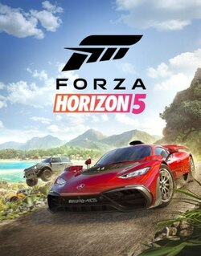
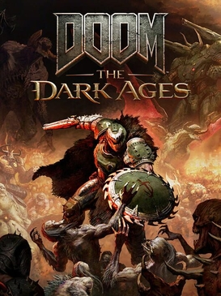

Playstation 5
Juegos Populares

God Of War Ragnarok
Sipnosis
“God of War Ragnarök es un juego de acción y aventura en el que los jugadores se meten en la piel de Kratos y su hijo,
quienes se embarcan en una misión para evitar la llegada del Ragnarök.
Los jugadores exploran los Nueve Reinos, enfrentándose a enemigos humanos como los saqueadores o a criaturas fantásticas en combates cuerpo a cuerpo.
Los jugadores usan el hacha Leviatán y las Espadas del Caos para combatir a los enemigos con sangrientos ataques que resultan en decapitaciones y desmembramientos. Tras debilitar al enemigo, los jugadores pueden realizar movimientos finales como empalamientos, desmembramientos o decapitaciones en primer plano. Los diálogos contienen lenguaje soez. ”

Spider man 2
Sipnosis
Los grandes héroes se forjan juntos. El increíble poder del simbionte lleva a Peter Parker y Miles Morales a una lucha desesperada mientras intentan equilibrar sus vidas, sus amistades y su deber de proteger a los demás en un emocionante capítulo de la aclamada franquicia Spider-Man en PC.
Playburguer
Una hamburguesa con un sabor "exclusivo"
Precio: 9.990
Ingredientes
- Carne de vacuno
- Champiñones
- Queso Cheddar
- Tocino
Servicio
- $4000 por hora
- Máximo 4 personas

Xbox Series X y S
Juegos Populares

Forza Horizon 5
Sipnosis
Explora los coloridos paisajes del mundo abierto de México con una acción de conducción ilimitada y divertida en los mejores coches del mundo.

Doom: The Dark Ages
Sipnosis
DOOM: The Dark Ages es la precuela de los aclamados DOOM (2016) y DOOM Eternal, y narra el épico y cinematográfico origen de la furia del DOOM Slayer. Los jugadores se pondrán en la piel del DOOM Slayer en una oscura y siniestra guerra medieval contra el infierno nunca antes vista.
Xbox Familiar
Comparte con tu familia la escencia de disfrutar juntos con Xbox
Precio: 15.990
Ingredientes
- 10 Alitas de pollo krispy
- Papas Fritas 800g
- 8 Empanadas de queso
- 10 Nuggets de pollo
Servicio
- $4000 por hora
- Máximo 4 personas

Nintendo Switch
Juegos Populares

Mario Kart Deluxe 8
Sipnosis
¡Acelera a través de las pistas del Reino Champiñón bajo el agua, en el cielo, de cabeza y sin gravedad, y llega a la meta para obtener la victoria! Prepara motores en el modo multijugador local*, en los torneos en línea** del juego, en el modo batalla que ha sido mejorado ¡y más!

Super Smash Bros Ultimate
Sipnosis
¡Un auténtico duelo de titanes de los videojuegos que podrás jugar cuando quieras y donde quieras! Lanza a tus rivales del escenario usando uno de los nuevos personajes como Simon Belmont o King K. Rool que se unen a Inkling, Ridley y a todos los combatientes presentes en la historia de Super Smash Bros. Disfruta de la velocidad mejorada y combate en los nuevos escenarios basados en las series de Castlevania, Super Mario Odyssey y otras.
Switch Italiano
¡It's a me! la hamburguesa emblematica de nintendo
Precio: 8.990
Ingredientes
- Champiñones
- Carne de vacuno
- Lechuga
- Tomate
- Cebolla Caramelizada
Servicio
- $4000 por hora
- Máximo 4 personas
Bebestible
FINALMEENTEEEEEEEE